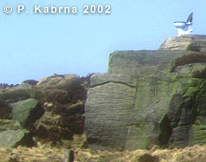
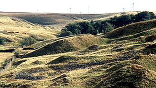
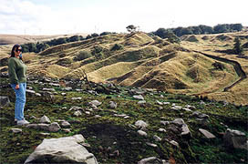

|

Kinderscout Grit
Note the Public Convenience !!
This is an outcrop on the Long Causeway just passed the Sportsman Pub on the way to Sheddon Clough
|
Ancient Limestone Industry
About (1550 - 1820)
In Sheddon Valley lies the remains of a unique lime burning industry whose origin can be dated to the 16th Century. It was at this time that the building trade took a significant step forward by replacing timber / wattle and daub buildings with stone structures, hence the demand for lime.
There is a car park on the Long Causeway making easy access to the Sheddon Limestone Hushings Trail. A number of marker posts guide the visitor around the Valley. On your walk you will see all the evidence of this remarkable industry - the hushings, the kilns, the waste, kiln debris and heat-reddened stone. The valley is covered by extensive rhododendron bushes making late June the ideal time to complete the trail.
The Kinderscout Grit is exposed in moorland at the top of Paul Clough where it meets the Long Causeway. When visiting Sheddon Valley, this exposure makes a nice start to the day although it is a different locality than the one described in the photograph above.
Path into Sheddon from the Long Causeway
The local geology of Sheddon Valley is founded on Carboniferous millstone grits, sandstones and shales. As there wasn't a readily available source of naturally outcropping limestone, the industry then owes a debt of gratitude to the Quaternary Ice Age for supplying the limestone.
This locality is very popular throughout the year as it lies next to the relatively new Wind Farm that sits above Paul Clough and Cartridge Clough. The erosive power of the ice collected limestone boulders (erratic) from the Ribble Valley and transported them into Sheddon Valley. These limestone boulders were excavated from glacial boulder clay by a process known as hushing.
The car park is the beginning of the Hushing trail with a gravel footpath leading down into Shedden. Numbered marker posts are provided and a key leaflet can be obtained from the tourist reference centre in the Burnley Mechanics. A good plan of action is to follow one watercourse from its gathering point, down to an area of storage ponds and then along a headrace to the work point in the hushings. This would mean ignoring the gravel footpath and walking beyond the car park to the head of a small Clough where a stream is culverted beneath the Long Causeway. At this point, probably some 200 plus years ago, the stream was damned-up and its water diverted via a goit supported by a very prominent embankment into a now dry water course over the moor. Here you walk to the bottom of this depression, cross over the gravel path with marker post No.1 and followed the goit to the storage ponds. Note the earthen dams of the storage ponds. A headrace can be picked up from the ponds and followed down to the tortured landscape of the hushings. Here many serrations of the hushings line the valley sides and the floor is a mass of rejected sandstone boulders.
View of Hushings Trail
|

The Hushings Trail
(the tops of the hushings mark the original height of the landscape!)
|
The hushing process required the capture of the headwaters of nearby streams which were diverted into storage ponds along channels or goyts. From the ponds, headraces channeled the water to the slope which was being worked. The sand, clay and gravel within the glacial boulder clay was washed away leaving labourers with pick and shovel to dig out the limestone. Unwanted sandstones and grits were just piled up. Collected limestone boulders were fired in the kilns to make quicklime.
The valley has been artificially widened from a narrow defile into an open cast width some quarter of a mile across. The level of the original land surface is clearly denoted by the abrupt cut-off from the peat moor, and by the fact that as the hushings progressed from either side, a "mountain range" was left down the middle of the valley. Since at this point the hushings water had expended its energy and there was no means of elevating it to the top of the ridge. Some 50 field-type limekilns are located along the lower reaches of the hushings and the hushing trail ends at one, which had been excavated and rebuilt.
Hushings Trail from Peat Fire (1993)
|

Standing on scorched earth
|
The fact that the limestone was buried in the glacial clays resulted in it being considered a mineral. In this event it was seen as the property of the Lord of the Manor and could only be taken where a lease had been granted.
The Towneley family (based at Towneley Hall), as Lords of the Manor of Cliviger, had the right to dig and sell lime from Sheddon Valley. There interest in rainfall (necessary to provide the headraces for the hushing process) prompted Richard Towneley to maintain exact records of rainfall between the years 1677 and 1703.
Ponies - Limegals
Packhorses were used to transport the limestone from the Craven District. The packhorse trains were commonly known as LIMEGALS due to the use of Galloway Ponies. They were capable of carrying around 200 pounds in large panniers.
In the background of the artists drawing you can see a couple of limekilns smoking away.
A Restored Lime Kiln
There are many kilns in Sheddon Valley most of which have deteriorated over the years. Some were dismantled for local walling stone. Eventually the lime burning of Sheddon Valley ceased. The suggested reason for the abandonment of the industry lies with the building of canals. This made possible the transport of huge quantities of quarried limestone from Barnoldswick and Skipton.
The limekilns although roughly constructed from sandstone boulders were well designed to be running kilns, i.e. by feeding limestone and fuel into the top of the oven chamber they could be kept burning indefinitely, the burnt lime being constantly raked out from the fire hole. However in the subsequent phase of sheep farming all the kilns had been severely vandalised for walling stone and are in a collapsed condition with their flues filled in. Consequently they can be quite difficult to locate but the party was able to identify a few as the walk proceeded down and across the valley into another prolific area of hushings. Here the melting glacier had laid down a deposit of sand and these areas were riddled with foxholes.
Kinderscout Grit and the Regional Stratigraphy
The Kinderscout Grit outcrops over a large area in the central Pennines and is a good example of a turbidite-fronted delta.
The Upper Kinderscout Grit is separated from the Lower Kinderscout Grit by the Butterly Marine Band (a fossiliferous condensed shale horizon).
Sedimentology
In the Cliviger Valley area, the Kinderscout Grit outcrops in and around the Long Causeway. It is a coarse-grained, pebbly sandstone which exhibits considerable lateral thickness variations and can be intercalated with siltstones, seat earths and coals.
|